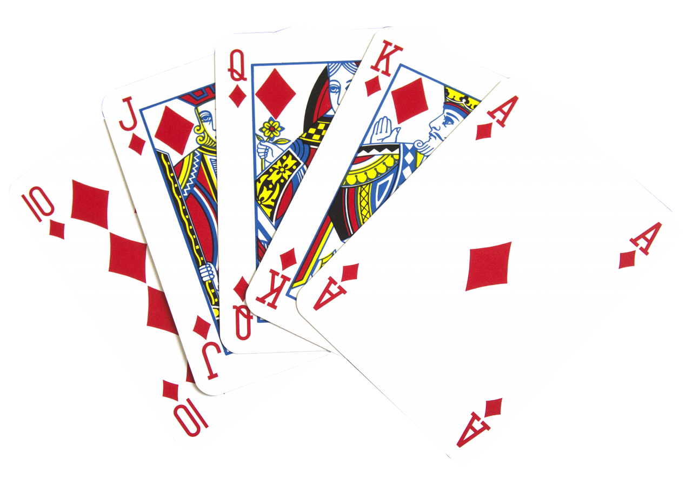

Working with Blocks in Objective-C
Storing Block Properties
Anonymous functions, broadly speaking, are an important feature of any programming language, and as far as Objective-C is concerned, blocks are no exception.
But as fun as it is to learn about blocks, let's admit it: blocks can be kind of boring without some context, especially for those block-heads who just can't appreciate how great blocks are. So, when learning about blocks, it's better to spice things up with some illustrative use cases. And what better to make learning about blocks more fun than...card games!

Imagine that I have a class that represents a Deck of cards. Below is the header file Deck.h for this hypothetical Deck class.
#import <Foundation/Foundation.h>
#import "Card.h"
NS_ASSUME_NONNULL_BEGIN
@interface Deck : NSObject
//MARK: - Initializers
-(id)init;
-(id)initWithDeck:(Deck*)otherDeck;
-(id)initWithCards:(NSArray<Card*>*)cards;
-(id)initWithRanks:(NSArray<NSString*>*)ranks andWithSuits: (NSArray<NSString*>*)suits andWithPointValues: (NSArray<NSNumber *>*)pointValues;
-(Card*)deal;
-(void)shuffle;
-(unsigned long)size;
-(BOOL)isEmpty;
-(BOOL)isEqual:(Deck*)otherDeck;
+(NSArray<Card*>*)performPerfectShuffle:(NSArray<Card*>*)cards;
+(NSArray<Card*>*)performEfficentInsertionShuffle:(NSArray<Card*>*)cards;
@end
NS_ASSUME_NONNULL_END
The Deck is a wrapper for an array of Card objects. The Card object basically stores information about a hypothetical playing card, such as suit(i.e. hearts,clubs,etc.), rank(king,queen,etc.), and point value. It could also include other methods, such as one that provides a string description for a given card, another that allows you to test for equality between two given cards, and more. The main thing is: our Deck class stores an array of Card objects and provides some handy methods that provide the functionality common to many card games, such as deal() and shuffle().
The primary initializer for this Deck class takes three parameters: (1) an array of strings representing all of the ranks possible for this set of cards (i.e. jacks, queens, kings), (2) an array of strings representing all of the suits possible for this set of cards, and finally (3) an array of NSNumber objects containing the point values for all of the ranks in the set of cards. During initialization, an array of cards is created for every combination of ranks and suits possible based on the arguments passed into the initializer for the ranks and suits parameters. (A precondition for initialization here is that the size of the ranks array and that of the point value array are equal)
In addition to creating this set of cards that gets stored in the instantiated Deck object, the created cards are shuffled - that is, the order of cards within the deck gets randomized based on a particular shuffling algorithm.
The question now arises: how can we check two given decks of cards for equality? Maybe you wouldn't have to. But let's say you did.
We could use a brute force approach where we check that each card present in one deck is also present in another deck, making sure that the same number of cards are present in both decks - but this could be time-consuming. For a given deck, we could also store a copy of the card array that gets created prior to shuffling it - but this would requiring allocating extra memory just so we can compare Deck objects later on.
How about instead storing a copy of the block of code that is responsible for generating the card set, excluding the shuffling operation. This way, we can regenerate the original set of cards (that is, prior to shuffling the deck) locally within the body of a comparison method such as isEqual. When our comparison of both decks is completed, these locally generated card arrays would then get deallocated.
With this in mind, we will define a block property in an extension to our Deck class, as show below. I've included the entire Deck extension for context:
@interface Deck ()
@property (strong,atomic)NSMutableArray<Card*>*cards;
@property (readonly) unsigned long size;
@property (readonly) BOOL isEmpty;
@property (readwrite) unsigned long topCardIndex;
@property (copy) NSMutableArray<Card*>*(^generator)(void);
Whenever we define a block property in an Objective-C class, it is considered good practice to use the copy attribute, which basically means the captured state internal to the block will be copied and stored in our property.
With that out of the way, here is an example of a newly-refactored initializer that stores the process for generating an initial set of cards in the generator property defined above:
//pointValues array must have same length as ranks array
-(id)initWithRanks:(NSArray<NSString*>*)ranks andWithSuits: (NSArray<NSString*>*)suits andWithPointValues: (NSArray<NSNumber *>*)pointValues{
self = [super init];
if(self){
_generator = ^{
NSMutableArray* cards = [[NSMutableArray alloc] init];
for(int i = 0; i < [ranks count]; i++){
for(int j = 0; j < [suits count]; j++){
Card* card = [[Card alloc] initWithRank:[ranks objectAtIndex:i] andWithSuit:[suits objectAtIndex:j] andWithPointValue:[pointValues objectAtIndex:i]];
[cards addObject:card];
}
}
return cards;
};
_cards = _generator();
[self shuffle];
_topCardIndex = [_cards count] - 1;
}
return self;
}
Notice that, in the code above, we are careful to call the shuffle function after we have stored the card array-generating code in our block. Otherwise, we wouldn't be able to perform standardized and consistent comparisons for various decks of cards.
Each time we initialize a deck, the code responsible for generating the array of cards will be assigned to the _generator variable (i.e. our block property). For example, we might have another initializer that initializes a new deck of cards with an array of card objects:
-(id)initWithCards:(NSArray*)cards{
self = [super init];
if(self){
_generator = ^{
return [NSMutableArray arrayWithArray:cards];
};
_cards = _generator();
[self shuffle];
}
return self;
}
We might also have a default initializer that uses a standard set of suits, ranks, and point values to generate an array of cards:
-(id)init{
self = [super init];
if(self){
_generator = ^{
int pointValue = 1;
NSMutableArray*cards = [[NSMutableArray alloc] init];
for(NSString* rank in [Deck GetDefaultRanks]){
for(NSString* suit in [Deck GetDefaultSuits]){
Card* newCard = [[Card alloc] initWithRank:rank andWithSuit:suit andWithPointValue:[NSNumber numberWithInt:pointValue]];
[cards addObject:newCard];
}
pointValue += 1;
}
return cards;
};
_cards = _generator();
[self shuffle];
_topCardIndex = [_cards count] - 1;
}
return self;
}
Finally, we could also have an initialzer that takes another deck of cards as a parameter, using it to instantiate a new Deck object, much the same way we would use a copy function.
-(id)initWithDeck:(Deck*)otherDeck{
self = [super init];
if(self){
_generator = ^{
return otherDeck.cards;
};
_cards = _generator();
[self shuffle];
}
return self;
}
All of the trouble of storing the card-generating code in a _generator block property only bears fruit when we are able to implement a method that tests for equality between two Deck objects. Below is an example of such a method:
-(BOOL)isEqual:(Deck*)otherDeck{
NSMutableArray* currentDeckCards = self.generator();
NSMutableArray* otherDeckCards = otherDeck.generator();
if(currentDeckCards.count != otherDeckCards.count){
return NO;
}
for(int i = 0; i < currentDeckCards.count; i++){
Card* currentDeckCard = [currentDeckCards objectAtIndex:i];
Card* otherDeckCard = [otherDeckCards objectAtIndex:i];
if(![currentDeckCard isEqual:otherDeckCard]){
return NO;
}
}
return YES;
}
It's evident from the code above that we need to call our generator block in order to temporarily regenerate the array of cards that we obtained prior to calling the shuffle method during initializaiton for each of our Deck objects.
Let's test our code. In our viewDidLoad() method of our ViewController class, let's add the following code:
Deck* deck1 = [[Deck alloc] init];
Deck* deck2 = [[Deck alloc] init];
Deck* deck3 = [[Deck alloc] initWithRanks:@[@"K",@"Q",@"J"] andWithSuits:@[@"red",@"blue"] andWithPointValues:@[
[NSNumber numberWithInt:10],
[NSNumber numberWithInt:20],
[NSNumber numberWithInt:30]
]];
Deck* deck4 = [[Deck alloc] initWithRanks:@[@"K",@"Q",@"J"] andWithSuits:@[@"red",@"blue"] andWithPointValues:@[
[NSNumber numberWithInt:10],
[NSNumber numberWithInt:20],
[NSNumber numberWithInt:30]
]];
Deck* deck5 = [[Deck alloc] initWithRanks:@[@"K",@"Q",@"J"] andWithSuits:@[@"red",@"blue",@"green"] andWithPointValues:@[
[NSNumber numberWithInt:10],
[NSNumber numberWithInt:20],
[NSNumber numberWithInt:30]
]];
NSLog(@"deck1 equals deck2 TRUE: %@",[deck1 isEqual:deck2] ? @"true":@"false");
NSLog(@"deck1 equals deck3 FALSE: %@",[deck1 isEqual:deck3] ? @"true":@"false");
NSLog(@"deck3 equals deck4 TRUE: %@",[deck3 isEqual:deck4] ? @"true":@"false");
NSLog(@"deck4 equals deck5 FALSE: %@",[deck4 isEqual:deck5] ? @"true":@"false");
The output we get from executing the code above should be as follows:
2019-09-23 04:43:10.402083-0400 Solitaire[6149:85494] deck1 equals deck2 TRUE: true
2019-09-23 04:43:10.402320-0400 Solitaire[6149:85494] deck1 equals deck3 FALSE: false
2019-09-23 04:43:10.402459-0400 Solitaire[6149:85494] deck3 equals deck4 TRUE: true
2019-09-23 04:43:10.402621-0400 Solitaire[6149:85494] deck4 equals deck5 FALSE: false
This is basically an ad hoc way of confirming that our isEqual(:otherDeck) method works as functions.
In short, the utility of using blocks (in the case of Objective-C) and closures (in the case of Swift) cannot be underemphasized. So learn to embrace blocks and make them part of your regular programming practice.